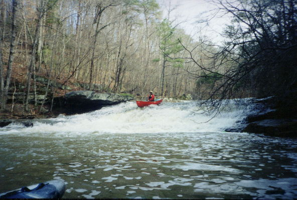
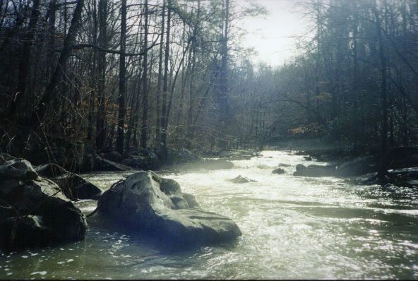
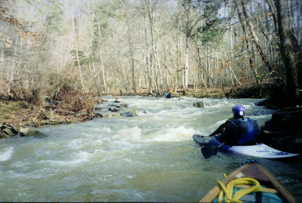

|  | Dr. Dave on the slide towards the top. This is an easy rapid. At higher water you might get up some speed. |
|  | A lousy picture of a fun looking rapid which I cannot remember at all. Between the sun, Daves poor excuse for a camera, and 200 speed Kodak film, what do you want? |
|  | A bit more water would have been nice, but it beat working by a long shot. |